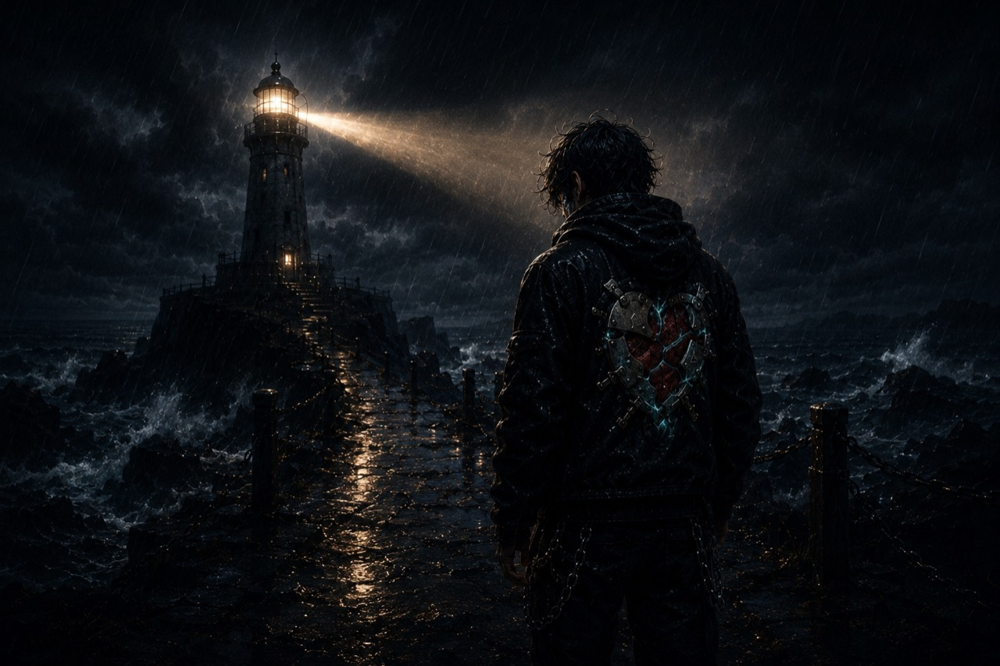

Game development lab
Game Design & QA
Gameplay systems, player experience analysis, test thinking, bug documentation, and practical polish.
See the career office
Dakota Dorrough presents
Come in. There's work to see.
A living creative headquarters
Project Lighthouse is Dakota Dorrough's professional home for game design, quality assurance, music, concepts, and the work still taking shape.
The active workspace
These are the disciplines currently on the desk. Finished work belongs in the archive; current work stays visible, useful, and moving forward.
Game development lab
Gameplay systems, player experience analysis, test thinking, bug documentation, and practical polish.
See the career officeMusic studio
Songwriting, visual direction, release planning, and a long-form creative identity.
Visit the studioConcept workshop
AI experiments, worldbuilding, concept development, and structured creative iteration.
See the room mapCareer office
The professional essentials stay easy to find. Immersion adds context; it never hides the work.
Current file
Game Design Graduate · QA Enthusiast · Creative Technologist
Pro Desk support, quotes, order accuracy, and real-time problem solving.
Speed, fulfillment accuracy, task management, and customer-focused execution.
Game Design coursework centered on systems, mechanics, and creative development.
Music studio
KidAither lives here - not as the whole building, but as one of the creative systems that makes the lighthouse personal.
Studio inventory
Final music, branding, and character assets will be placed deliberately as they are ready - not guessed into existence.
Permanent room map
Choose a room to see the active object and the archive that keeps finished work organized.
Choose a room
Select a permanent room to see what is active now and how its archive stays organized.
Active space
Current work remains visible and useful.
Archive space
Keep the light on
For professional opportunities, QA roles, game design conversations, or creative collaboration.
Email Dakota